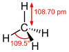

methane

Definition: Methane (US: MEH-thayn, UK: MEE-thayn) is a chemical compound with the chemical formula CH4 (one carbon atom bonded to four hydrogen atoms). It is a group-14 hydride, the simplest alkane, and the main constituent of natural gas. The relative abundance of methane on Earth makes it an economically attractive fuel, although capturing and storing it poses technical challenges due to its gaseous state under normal conditions for temperature and pressure.
Source: Wikipedia
Wikipedia Page
Wikidata Page
Occurs in: